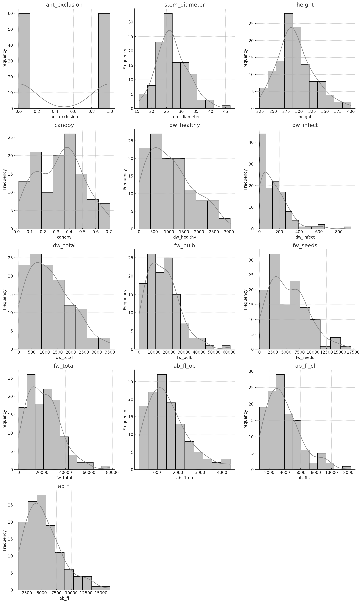
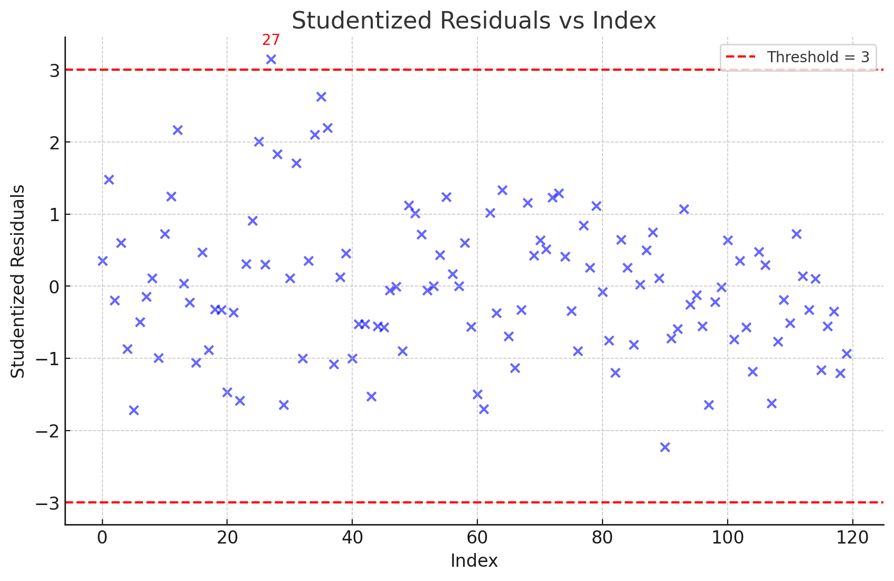
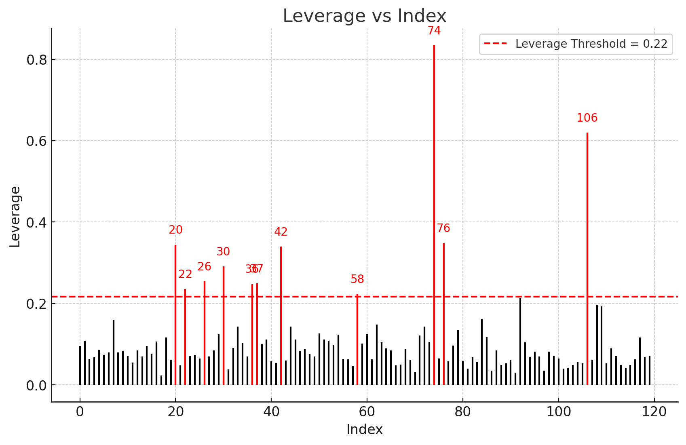
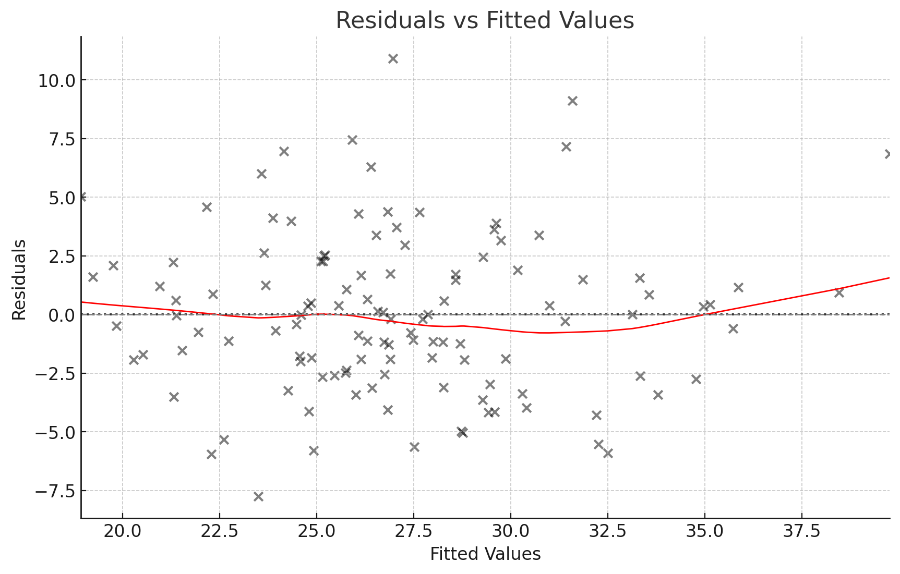
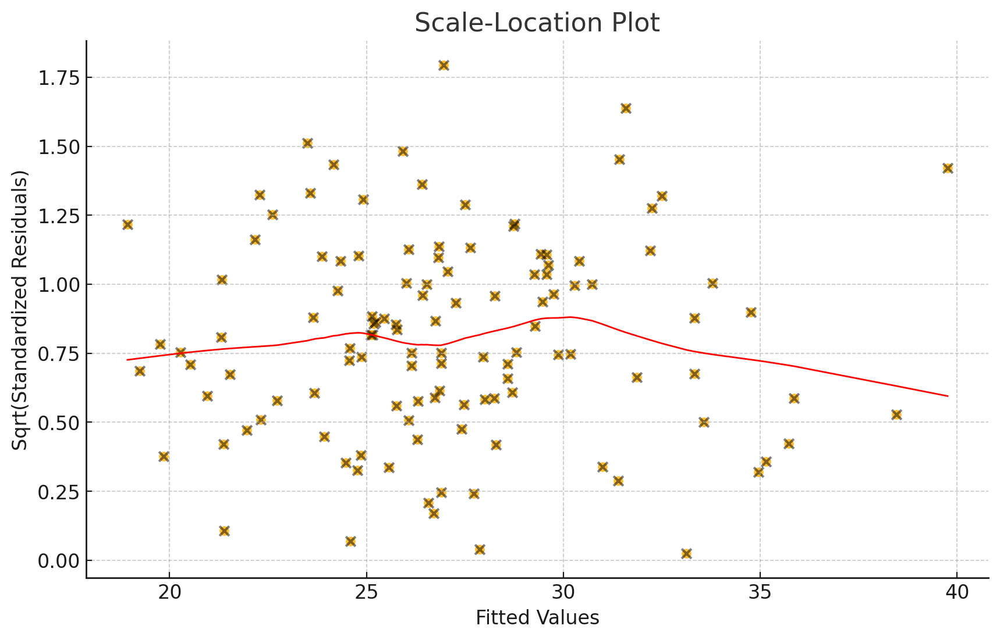
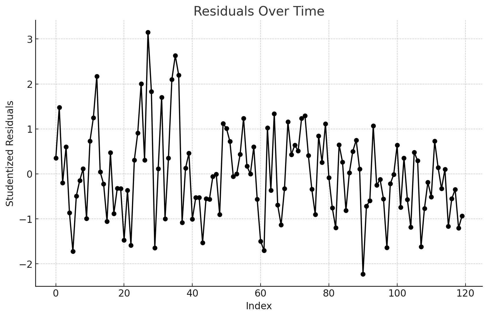
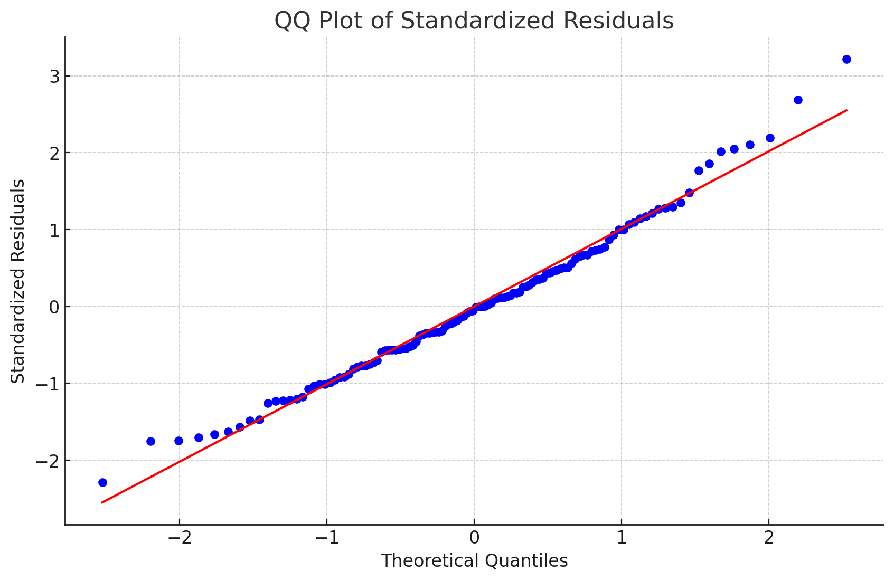
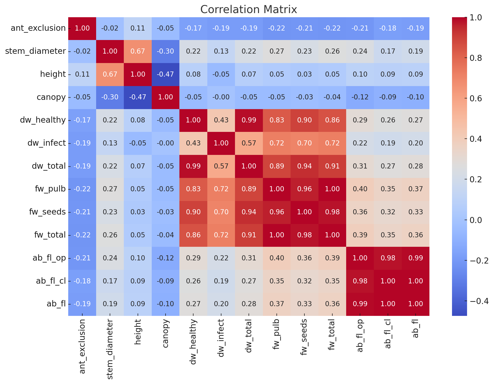

Descriptive statistics are a set of techniques used to summarize and describe the main features of a dataset. They provide a way to present quantitative descriptions in a manageable form. Here are some key points about descriptive statistics:
Purpose: The main goal of descriptive statistics is to provide a clear summary of the data, making it easier to understand and interpret.
Types of Descriptive Statistics:
Measures of Central Tendency: These statistics describe the center of a dataset. The most common measures are:
Measures of Dispersion: These statistics describe the spread or variability of the data. Common measures include:
Data Visualization: Descriptive statistics often include graphical representations of data, such as:
Applications: Descriptive statistics are widely used in various fields, including business, healthcare, social sciences, and education, to summarize data and make informed decisions.
In summary, descriptive statistics provide a way to summarize and understand data through numerical measures and visual representations, making it easier to analyze and communicate findings.
| ant_exclusion | stem_diameter | height | canopy | dw_healthy | dw_infect | dw_total | fw_pulb | fw_seeds | fw_total | ab_fl_op | ab_fl_cl | ab_fl | |
| count | 120 | 120 | 120 | 120 | 120 | 120 | 120 | 120 | 120 | 120 | 120 | 120 | 120 |
| mean | 0.5 | 27.0966 | 293 | 0.329775 | 1054.78 | 149.55 | 1203.53 | 16239.7 | 5404.45 | 21617.6 | 1550.13 | 3910.92 | 5452.61 |
| std | 0.502096 | 5.30599 | 34.6056 | 0.173708 | 750.21 | 146.953 | 824.982 | 10796.7 | 3541.42 | 14236.2 | 904.836 | 2230.83 | 3106.13 |
| min | 0 | 15.7375 | 223.75 | 0.015 | 0 | 0 | 0 | 0 | 0 | 0 | 241 | 741 | 1114 |
| 25% | 0 | 23.375 | 270.375 | 0.18125 | 447.25 | 46.75 | 573.25 | 8083.5 | 2824.25 | 11107.2 | 905.25 | 2277.5 | 3178.25 |
| 50% | 0.5 | 26.7125 | 287.875 | 0.344167 | 939.5 | 116 | 1135 | 14767 | 4983 | 19292 | 1360 | 3440.5 | 4798 |
| 75% | 1 | 30.3656 | 313.188 | 0.449167 | 1536 | 216.5 | 1717.5 | 21869.2 | 7544.5 | 29008.2 | 2018.75 | 5053.25 | 7006.75 |
| max | 1 | 46.6 | 399.5 | 0.708333 | 3045 | 920 | 3500 | 60787 | 17025 | 77812 | 4369 | 12469 | 16501 |
Summary statistics provide a concise overview of the main characteristics of a dataset. They are used to describe and summarize the data in a way that is easy to understand and interpret. Here are the key components of summary statistics:
Measures of Central Tendency:
Measures of Dispersion:
Measures of Shape:
Percentiles:
Summary statistics provide a quick and informative snapshot of the data, helping to understand its central tendency, variability, and distribution shape. They are essential for data analysis and interpretation, allowing for comparisons between different datasets or groups.
I want to know more about histograms: 1. What are histograms? 2. What are the components of a histogram? 3. How do i interpret a histogram? 4. Provide histograms for every variable of the dataset. Use 'sns.histplot(kde=True,color='gray')' to display the histograms in a grid format.
Here are the histograms for each variable in the dataset, displayed in a grid format. Each histogram includes a kernel density estimate (KDE) overlay to help visualize the distribution of the data.
What are boxplots?
What are the components of a boxplot?
How do I interpret a boxplot?
Provide boxplots for every variable of the dataset. Use 'sns.boxplot(color='gray')' to display the boxplots in a grid format.
Here are the boxplots for each variable in the dataset, displayed in a grid format. Each boxplot provides a visual summary of the distribution, central tendency, and potential outliers for the respective variable.
What are ECDF plots?
What are the components of an ECDF plot?
How do I interpret an ECDF plot?
Provide ECDF plots for every variable of the dataset. Use 'sns.ecdfplot(color = 'black')' to display the ECDF plots in a grid format.
Here are the ECDF plots for each variable in the dataset, displayed in a grid format. Each plot shows the cumulative distribution of the data, providing insights into the distribution and allowing for easy comparison between different variables.
What are QQ plots?
What are the components of a QQ plot?
How do I interpret a QQ plot?
Provide QQ plots for every variable of the dataset. Use 'stats.probplot(dist='norm')' to display the QQ plots in a grid format.
Here are the QQ plots for each variable in the dataset, displayed in a grid format. Each plot compares the quantiles of the dataset against the quantiles of a normal distribution, helping to assess how closely the data follows a normal distribution.
Multiple linear regression is a statistical technique used to model the relationship between a dependent variable and two or more independent variables. It extends simple linear regression, which involves only one independent variable, to include multiple predictors. The goal is to find the best-fitting linear equation that describes how the dependent variable changes with the independent variables.
The multiple linear regression model can be represented as:
\( y_i = \beta_0 + \beta_1 x_{i1} + \beta_2 x_{i2} + \cdots + \beta_p x_{ip} + \epsilon_i \)
Where:
Linearity: The relationship between the dependent variable and the independent variables is linear. Mathematically, this means:
\( E(y_i | x_{i1}, x_{i2}, \ldots, x_{ip}) = \beta_0 + \beta_1 x_{i1} + \beta_2 x_{i2} + \cdots + \beta_p x_{ip} \)
Independence: The observations are independent of each other. This implies that the error terms (\( \epsilon_i \)) are uncorrelated:
\( \text{Cov}(\epsilon_i, \epsilon_j) = 0 \quad \text{for} \quad i \neq j \)
Homoscedasticity: The variance of the error terms is constant across all levels of the independent variables. Mathematically:
\( \text{Var}(\epsilon_i) = \sigma^2 \quad \text{for all} \quad i \)
Normality: The error terms are normally distributed. This can be expressed as:
\( \epsilon_i \sim N(0, \sigma^2) \)
No Multicollinearity: The independent variables are not perfectly linearly related. This means that no independent variable is a perfect linear combination of the others.
Regression diagnostics refer to the process of evaluating the validity and reliability of a regression model. This involves assessing whether the assumptions underlying the regression analysis are met and identifying any potential issues that could affect the model's performance. The goal of regression diagnostics is to ensure that the model provides an accurate and meaningful representation of the data.
Key aspects of regression diagnostics include:
Model Fit: Evaluating how well the regression model captures the relationship between the dependent and independent variables. This involves checking if the model accurately predicts the observed data.
Assumption Checking: Ensuring that the assumptions of the regression model, such as linearity, independence, homoscedasticity, and normality, are satisfied. Violations of these assumptions can lead to biased or inefficient estimates.
Influence and Leverage: Identifying data points that have a disproportionate impact on the model's estimates. These points can skew the results and lead to incorrect conclusions.
Residual Analysis: Analyzing the differences between observed and predicted values (residuals) to detect patterns or anomalies that may indicate problems with the model.
Model Robustness: Assessing the stability of the model's estimates under different conditions or subsets of the data. This helps determine if the model's conclusions are reliable.
Overall, regression diagnostics are essential for validating the integrity of a regression model and ensuring that the results are trustworthy and applicable to the data being analyzed.
The OLS regression model has been built using stem_diameter as the dependent variable and all remaining variables as independent variables.
Outliers are data points that deviate significantly from the other observations in a dataset. They can occur due to variability in the data, errors in data collection, or they may represent a unique case that is not typical of the rest of the data. Outliers can have a substantial impact on statistical analyses, including regression models, as they can skew results and lead to misleading conclusions.
Studentized residuals are a type of standardized residual used in regression analysis to identify outliers. They are calculated by dividing the residuals (the difference between observed and predicted values) by an estimate of their standard deviation. This standardization allows for a more accurate assessment of whether a residual is unusually large or small.
The formula for calculating studentized residuals is:
\( t_i = \frac{e_i}{s(e_i)} \)
Where:
A common threshold for identifying outliers using studentized residuals is 3. This threshold is based on the properties of the normal distribution, where approximately 99.7% of data points lie within three standard deviations of the mean. Observations with studentized residuals greater than 3 (in absolute value) are considered potential outliers.
Let's plot the studentized residuals against the index to identify any potential outliers. We'll use a red dashed line to indicate the threshold of 3.
The plot above shows the studentized residuals for each observation in the dataset. The red dashed lines represent the threshold of 3 and -3. Observations with studentized residuals beyond these thresholds are considered potential outliers.
The threshold of 3 is based on the properties of the normal distribution. In a normal distribution, approximately 99.7% of the data points lie within three standard deviations of the mean. Therefore, a studentized residual greater than 3 (or less than -3) suggests that the observation is unusually far from the predicted value, indicating it may be an outlier.
Yes, regression diagnostics should be repeated after removing potential outliers. Outliers can have a significant impact on the regression model, affecting the estimates of coefficients, standard errors, and overall model fit. By removing outliers and re-evaluating the model, you can ensure that the results are robust and not unduly influenced by anomalous data points.
High-leverage points are observations in a dataset that have an unusually large influence on the estimation of the regression coefficients. These points are located far from the center of the independent variable space and can disproportionately affect the fit of the regression model. High-leverage points can be identified using the leverage value, which measures the influence of an observation on the fitted values.
The threshold for identifying high-leverage points is often set at \( \frac{2p}{n} \), where:
Cook's Distance is a measure used to identify influential data points in a regression analysis. It quantifies the effect of removing an observation on the estimated regression coefficients. A large Cook's Distance indicates that the observation has a significant impact on the model's estimates.
The formula for Cook's Distance is:
\( D_i = \frac{(e_i^2 / p) \cdot h_{ii}}{(1 - h_{ii})^2} \)
Where:
A common threshold for identifying influential points using Cook's Distance is \( \frac{4}{n} \).
Let's plot the leverage values and Cook's Distance to identify any high-leverage points and influential observations. We'll use the specified thresholds and annotate the plots accordingly.
These plots help identify observations that have a significant impact on the regression model, either through their leverage or their influence on the model's estimates.
Explain non-linearity to me. Then, explain the rainbow test to me and provide mathematical equations. I want to understand the basic idea of the rainbow test. Afterwards, tell me if non linearity if violated by using the rainbow test and the plot of residuals vs fitted values. Explain and interpret the plot. Additional infos on the plot: - use sns.residplot(lowess=True) and plt.scatter(predictions, residuals, color='black')
Non-linearity refers to a situation where the relationship between the independent variables and the dependent variable in a regression model is not linear. In a linear regression model, it is assumed that changes in the independent variables lead to proportional changes in the dependent variable. However, if the true relationship is non-linear, this assumption is violated, and the model may not accurately capture the underlying pattern in the data.
The rainbow test is a statistical test used to detect non-linearity in a regression model. It assesses whether the linearity assumption holds by comparing the fit of the model over different segments of the data. The test involves splitting the data into two parts and comparing the fit of the model on these segments.
The basic idea of the rainbow test is to check if the model fits the data equally well across different segments. If the fit is significantly different, it suggests that the linearity assumption may be violated.
The test statistic for the rainbow test is calculated as follows:
The null hypothesis of the rainbow test is that the model fits the data equally well across all segments, indicating linearity.
Let's perform the rainbow test and plot the residuals vs. fitted values to assess non-linearity.
The p-value from the rainbow test is greater than the common significance level (e.g., 0.05), indicating that there is no strong evidence to reject the null hypothesis. This suggests that the linearity assumption is not violated, and the model fits the data equally well across different segments.
In this plot, the residuals appear to be randomly scattered without any clear pattern, supporting the conclusion from the rainbow test that the linearity assumption is not violated.
Heteroscedasticity refers to a condition in regression analysis where the variance of the residuals (errors) is not constant across all levels of the independent variables. In a well-fitted linear regression model, the residuals should have constant variance, a condition known as homoscedasticity. When this condition is violated, and the variance of the residuals changes with the level of the independent variables, it is termed heteroscedasticity.
Heteroscedasticity can lead to inefficient estimates and affect the validity of statistical tests, as it violates one of the key assumptions of the classical linear regression model. It can result in biased standard errors, which in turn affect hypothesis tests and confidence intervals.
The Breusch-Pagan test is a statistical test used to detect heteroscedasticity in a regression model. It assesses whether the variance of the residuals is related to the independent variables.
The basic idea of the Breusch-Pagan test is to regress the squared residuals from the original regression model on the independent variables. If the independent variables explain a significant portion of the variance in the squared residuals, it suggests the presence of heteroscedasticity.
The test involves the following steps:
Calculate the test statistic:
\( \text{BP} = n \cdot R^2 \)
Where:
The test statistic follows a chi-square distribution with degrees of freedom equal to the number of independent variables.
Let's perform the Breusch-Pagan test and plot the scale-location plot to assess heteroscedasticity.
The p-value from the Breusch-Pagan test is slightly above the common significance level (e.g., 0.05), suggesting that there is not strong evidence to reject the null hypothesis of homoscedasticity. This implies that heteroscedasticity may not be a significant issue in this model.
In this plot, the points appear to be relatively evenly spread, with no clear pattern or trend, supporting the conclusion from the Breusch-Pagan test that heteroscedasticity is not a major concern in this model.
In regression analysis, one of the key assumptions is that the error terms (residuals) are uncorrelated with each other. This means that the error for one observation should not be related to the error for another observation. When this assumption is violated, it is known as autocorrelation or serial correlation. Autocorrelation is common in time series data, where the error terms may be correlated over time.
Autocorrelation can lead to inefficient estimates and affect the validity of statistical tests, as it violates the assumption of independence of errors.
The Durbin-Watson test is a statistical test used to detect the presence of autocorrelation in the residuals of a regression model. It specifically tests for first-order autocorrelation, where the error term for one observation is correlated with the error term for the next observation.
The test statistic is calculated as follows:
\( DW = \frac{\sum_{t=2}^{n} (e_t - e_{t-1})^2}{\sum_{t=1}^{n} e_t^2} \)
Where:
The Durbin-Watson statistic ranges from 0 to 4:
Let's perform the Durbin-Watson test and plot the residuals over time to assess autocorrelation.
The Durbin-Watson statistic is slightly below the recommended range of 1.5 to 2.5, suggesting the presence of positive autocorrelation in the residuals. This indicates that the error terms for consecutive observations may be correlated.
In this plot, there may be some patterns or trends in the residuals, which could indicate autocorrelation. This visual observation, combined with the Durbin-Watson statistic, suggests that there may be some correlation of error terms in the model.
In regression analysis, one of the assumptions is that the residuals (errors) are normally distributed. This assumption is important because it underlies many statistical tests and confidence intervals used in regression analysis. If the residuals are normally distributed, it suggests that the model is well-specified and that the estimates of the coefficients are reliable.
The Shapiro-Wilk test is a statistical test used to assess the normality of a dataset. It tests the null hypothesis that the data is normally distributed against the alternative hypothesis that it is not.
The basic idea of the Shapiro-Wilk test is to compare the order statistics of the sample to the expected order statistics of a normal distribution. The test statistic \( W \) is calculated as follows:
\( W = \frac{\left( \sum_{i=1}^{n} a_i x_{(i)} \right)^2}{\sum_{i=1}^{n} (x_i - \bar{x})^2} \)
Where:
A small \( W \) value indicates a departure from normality. The test provides a p-value to help determine whether to reject the null hypothesis of normality.
Let's perform the Shapiro-Wilk test and create a QQ plot of the standardized residuals to assess normality.
The p-value from the Shapiro-Wilk test is greater than the common significance level (e.g., 0.05), indicating that there is no strong evidence to reject the null hypothesis of normality. This suggests that the residuals are approximately normally distributed.
In this plot, the points closely follow the reference line, supporting the conclusion from the Shapiro-Wilk test that the residuals are approximately normally distributed. This indicates that the normality assumption is not violated in this model.
Collinearity, or multicollinearity, refers to a situation in regression analysis where two or more predictor variables are highly correlated. This means that one predictor variable can be linearly predicted from the others with a substantial degree of accuracy. Collinearity can cause problems in estimating the coefficients of the regression model, leading to inflated standard errors, reduced statistical power, and difficulties in determining the individual effect of each predictor.
The Variance Inflation Factor (VIF) is a measure used to quantify the degree of multicollinearity in a set of multiple regression variables. It provides an index that measures how much the variance of an estimated regression coefficient increases when your predictors are correlated.
The basic idea of VIF is to assess how much the variance of a regression coefficient is inflated due to multicollinearity. The VIF for a predictor variable is calculated as follows:
\( VIF_j = \frac{1}{1 - R_j^2} \)
Where:
A VIF value of 1 indicates no correlation between the \( j \)-th predictor and the other predictors, while a VIF value greater than 10 is often used as a threshold to indicate significant multicollinearity.
Let's calculate the VIF for each predictor and plot the correlation matrix to assess collinearity.
The VIF values for the predictors are as follows:
dw_healthy, dw_total, fw_pulb, fw_total, and others have extremely high VIF values, indicating that these variables are highly correlated with other predictors.In the heatmap, you can observe strong correlations between several pairs of variables, which aligns with the high VIF values observed. This suggests that multicollinearity is present in the dataset, which could affect the stability and interpretability of the regression model coefficients.
Here's a summary of the diagnostic results for the regression model:
Outliers:
High-Leverage Points:
Non-Linearity:
Heteroscedasticity:
Correlation of Error Terms:
Normality of Residuals:
Collinearity of Predictors:
Overall, the diagnostics suggest that while the model does not exhibit severe issues with non-linearity, heteroscedasticity, or normality of residuals, there are concerns with outliers, high-leverage points, autocorrelation, and multicollinearity that may need to be addressed to improve the model's reliability and interpretability.